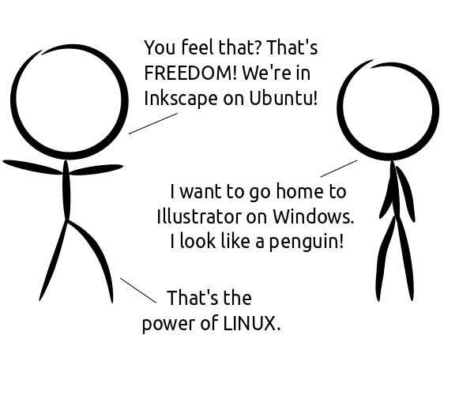

Comic JK 727
When I Feel Like It
⇤
<
?
>
⇥

⇤
<
?
>
⇥
Forum
.
RSS
.
Digg
.
Facebook
.
Reddit
.
Twitter
.
Stumbleupon
Enter your thoughts on number 727 here. Please, no spamming, trolling, phreaking, or drawing freely. Your mother runs Illustrator on a VM hosted on Windows running Slackware Linux and wine. aaaahahahahaha for some reason, this cartoon reminded me of the Uffington White Horse... This is about time. (Of course, the only reason I use Inkscape is because it is free and Illustrator isn't... Spending money is something I like to avoid) > This, I would rather keep my $700 dollars. I like penguins anyway. >>walking is free, but I for one would prefer to pay to cross the Atlantic by plane or ship, rather than walking... >>>Of course you would. But swimming is also free, and it works better for crossing oceans than walking... >>>>I deliberately said "walking", as the probability of personally swimming across the Atlantic is only negligably higher than that of walking across... swimming across an ocean tends to be a valid option if one is a cetacean - or indeed a turtle - but being neither, I think paying to cross the Atlantic by plane or ship is still a better option than drowning for free... :) >>>>>jack sparrow: Seaturtles! >>>>>>held in check with hair from his back! this looks better than the normal comics, what are you on D: >He is on Inkscape and Ubuntu! Woooo! >> I meant what /drugs/ was he on :P >>>I think he knew that! SPAAAAAAAAAAAAAAAAAAAAAAAAAAAAAACE!!!!!! hello, comment box readers~ > hello, comment box writer? wanna move to inkscape and blender, but it's a hard step > But will it blend?!